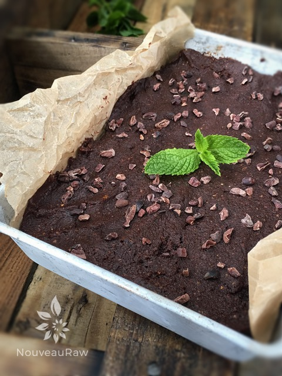
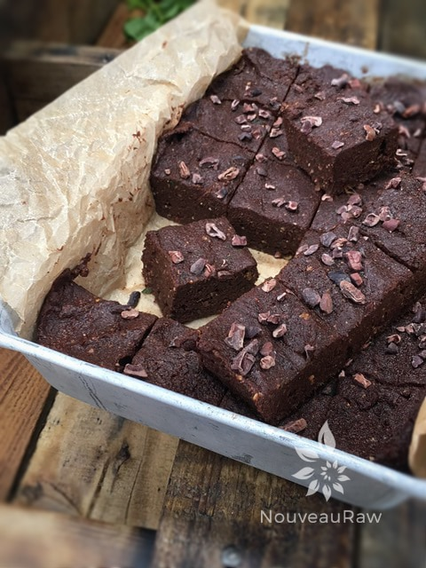
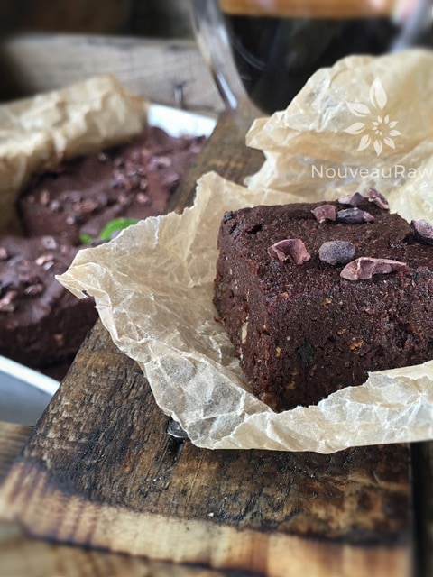

Espresso’ My Mint Cacao Brownies

~ raw, vegan, gluten-free ~
I have always been a brownie lover, but to be honest, since I started eating healthier, I have kept this yummy dish off my menu. How sad is that? Sad, sad day (hangs head in self-pity). Everyone needs some brownies in their life.
I share this recipe just as the holiday season is beginning. And I know it will come fast…it is my goal to be better prepared for all those dinner parties and gatherings.
These Espresso’ My Mint Cacao Brownies are perfect for that task. They freeze beautifully! You could even go as far as topping them with a raw Chocolate Ganache frosting or even a raw caramel frosting. Shew that would be decadent and super-rich. Whether you dress them up or not, I promise you and your guests that you won’t be disappointed!
The Power of Cacao
If you surf the net, you will find endless information regarding the health benefits of cacao. I won’t even begin to touch the tip of the iceberg here. Still, I do want to point out that raw cacao powder contains more than 300 different chemical compounds and nearly four times the antioxidant power of your average dark chocolate – more than 20 times than that of blueberries. It also is a source of protein, calcium, carotene, thiamin, riboflavin, magnesium, sulfur, flavonoids, antioxidants, and essential fatty acids are also present.
 Word of Caution, hmmm not what you are expecting to see on a recipe posting, now is it? But I feel that it is crucial to point out that cacao powder contains theobromine. It can stimulate the central nervous system and dilate blood vessels. Theobromine has about 1/4 of the stimulating power of its sister molecule caffeine. So if you are sensitive to caffeine, be watchful in how your body may or may not react to raw cacao. Oh, and if you are sensitive to caffeine, omit the espresso and feel free to add any other flavor extract if you wish to.
Word of Caution, hmmm not what you are expecting to see on a recipe posting, now is it? But I feel that it is crucial to point out that cacao powder contains theobromine. It can stimulate the central nervous system and dilate blood vessels. Theobromine has about 1/4 of the stimulating power of its sister molecule caffeine. So if you are sensitive to caffeine, be watchful in how your body may or may not react to raw cacao. Oh, and if you are sensitive to caffeine, omit the espresso and feel free to add any other flavor extract if you wish to.
This brownie recipe is a cross between the texture of a brownie and fudge. The good news is, is that it doesn’t require any dehydration. But it will need to stay in the fridge or freezer. Which brings up another great point… These brownies will keep for 1-3 months in the freezer. They won’t freeze rock solid so they can be enjoyed on the whim of any chocolate craving attack. How is that for service? I hope you enjoy this recipe. Be sure to comment below and have a blessed day, amie sue
- 2 cups Medjool dates, pits removed
- 2 cups raw walnut pieces, soaked
- 1 cup raw cacao powder
- 1/2 cup mint, minced
- 1 shot of espresso
- pinch Himalayan pink salt
- 1/2 cup raw cacao nibs (more or less to taste)
Preparation:
- Place walnuts in a food processor and grind for a couple of seconds to form a coarse flour. Be careful to not over process, which releases too much of the oil from the nuts.
- Add cacao powder and salt – pulse till mixed.
- While the machine is running, add the espresso, mint, and dates until a moist, crumb-like dough has formed.
- Spread into a 9×9 inch pan, sprinkle with cacao nibs, and press firmly into a solid brownie layer.
- Chill for 30 minutes and cut into bite-size squares and serve.
- Store in the fridge to extend shelf life. These are great to freeze as well for those unexpected guests~
- Makes about 2 dozen small squares. More or less, depending on the size you choose.
The Institute of Culinary Ingredients™
- Dates are a fantastic ingredient for raw food recipes, click (here) to read why.
- What is raw cacao powder?
- What is Himalayan pink salt, and does it matter? Click (here) to read more about it.



© AmieSue.com